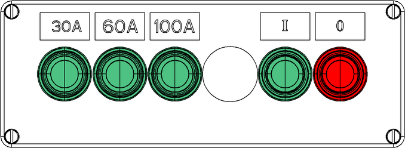

Steuerpult Ladeanschluss für max. 100 A (ANSI)

Fig. 3075: Steuerpult Ladeanschluss für max. 100 A
Fig. 3075: Steuerpult Ladeanschluss für max. 100 A
Alle Tasten und Schalter sind mit einer Leuchtdiode (LED) ausgestattet, die die Funktion und/oder die getroffene Vorwahl optisch anzeigt.
Anzeige 30-A-Ladestrom (leuchtet grün)
Ladestrom mit 30 A ist gewählt.
Schalter 60-A-Ladestrom*
Ladestrom mit 60 A wählen oder abwählen.
Schalter 100-A-Ladestrom
Ladestrom mit 100 A wählen oder abwählen.
Taste Ladevorgang fortsetzen
Ladevorgang ist unterbrochen.
Ladevorgang fortsetzen.
Taste Ladevorgang fortsetzen (blinkt grün)
Hochvoltbatterien werden geladen.
Ladevorgang startet nach manueller Unterbrechung automatisch.
Taste Ladevorgang fortsetzen (leuchtet grün)
Ladeziel ist erreicht.
Taste Ladevorgang unterbrechen
Ladevorgang ist freigegeben.
Ladevorgang unterbrechen.
Taste Ladevorgang unterbrechen (leuchtet rot)
Ladevorgang ist unterbrochen.
Taste Ladevorgang unterbrechen (blinkt rot)
Fehler des Ladevorgangs ist aufgetreten.
Wenn Taste Ladevorgang fortsetzen und Taste Ladevorgang unterbrechen nicht leuchten:
– | Ladekabel ist spannungsfrei. |
– | Ladekabel ist entfernt. |